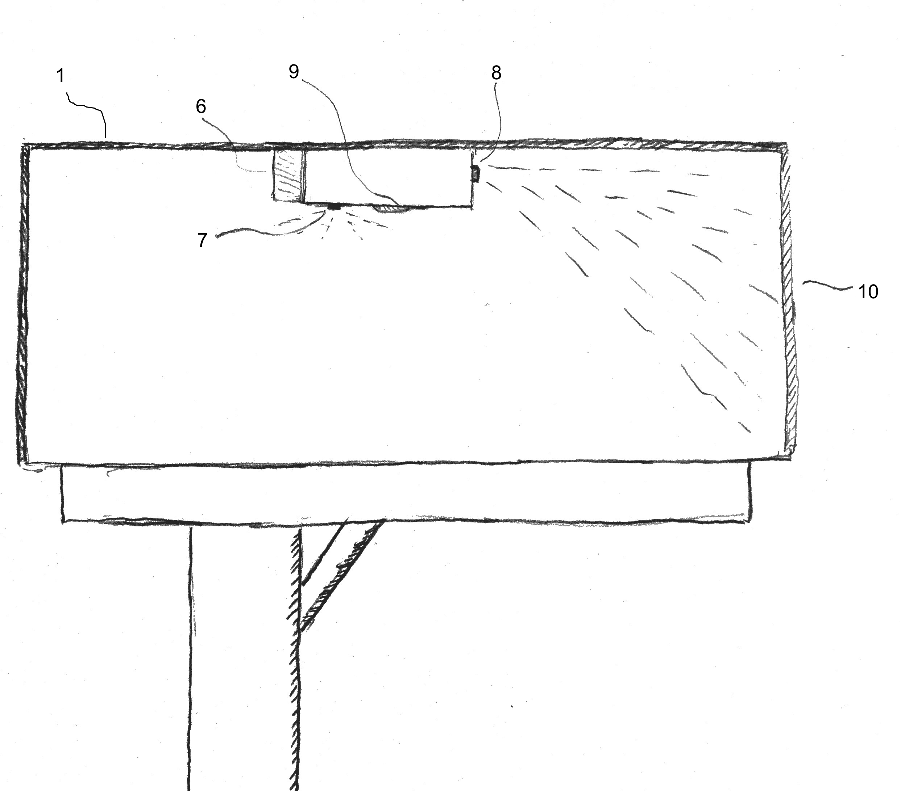
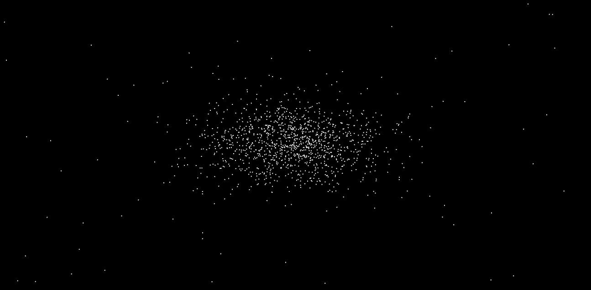

btevfik.me
Baris Tevfik on the Web
Projects

Augmented Reality Games for Rehabilitation
In my undergraduate senior design project, I have worked on augmented reality games, specifically designed for patients that need upper-limb rehabilitation. Our project won the third place prize among other ECE projects at the end of that year.
Click here to download our final report. You can learn more about this on the project website.
Our team was also on the engineering college publication that year.

Web Controlled Car
In Fall 2012, our final assignment in EC544 (Networking the Physical World) was to create something new using our knowledge we had learned in the class. Prior to this, we had created a web controlled LED and autonomous (not so sophisticated) car among other projects.
So our team decided to create a web-controlled car as a combination of these assignments. We had to come up with a solution in a short time and implement it. Therefore we decided to use a netbook to control the car via internet. The netbook had a web-server installed, and whoever visited the webpage were able to control the car. We did a complete run around the first floor of Photonics building.

The website also had a webcam stream embedded in it, so the driver was able to see his actions in real time. Moreover a friend from India was able to access the car and control it for a while. Presentation slides for this project available here.


Super Kids - A Java Swing Application
Also in Fall 2012, as a group of 9 students we worked on a software engineering project. The goal of the project was to create an application for kids to explore and learn colors, shapes, animals etc. The application is created using JAVA and called Super Kids: The Ultimate Adventure.
The kids part of the application consists of tutorial and question modes. Moreover, parents are able to add/edit/remove questions, review their children's progress and set achievements.
There were two teams splitting up GUI and back-end workload. The Github repository of this project can be found here. JavaDocs and final presentation can be found here.
Fuddle - An Image Sharing Website
In Spring 2013, we have created a website similar to Imgur, 9GAG and Pinterest. The website was created from ground up using ASP.NET and C#. On the client side we have extensively used javascript and jquery to create a richer user experience. Some open source jquery projects such as JCrop were included into our website as well. I was heavily involved in the overall visual design and structure of the website mainly using CSS and HTML. I was also involved in many aspects of the server-side coding dealing with AJAX requests, functions to update database entries and ASP.NET controls and searching functionality.
Main functions of the website enables a user to register, login, upload pictures to their profile, edit their profile, create albums, comment and rate other users' pictures and search pictures and users in the website.
The project page contains the presentation slides about this project. We have also deployed our website on AppHarbor for demo and test purposes. The demo can be found at fuddle.apphb.com.

Mailbox Delivery Notifier
In Summer 2013, I took ME502:Intellectual Assets course. In our final project we have come up with a potentially patentable idea. The invention is called "Apparatus and Software Application For Mailbox Notification". It allows people to get push notifications on their phone when new mail is delivered to their mailbox. It tries to solve some of the problems found in similar prior inventions.
We gave a presentation at the end of the course on this idea. The mock patent can be downloaded here.
Fruit Ninja on Gumstix
This is the final project of the embedded systems class(EC535) I took in Spring 2013. We have designed a touchscreen game using Qt framework for Gumstix Verdex. The game is based on the very popular IPhone game called Fruit Ninja. The main objective of the game is to slice as many fruits as possible, that are shot from bottom of the screen before running out of number of attempts.
You can download the project report from here.

N-Body Simulations
This project was part of the high performance programming course(EC527) in Spring 2013. In our project we focused on simulating the behavior of particles under each others influence taking into account only their gravitational force. We have developed several versions of this simulation ranging from a naive, O(N^2) complexity serial version to a Cuda implementation and an implementation using Barnes-Hut algorithm. This algorithm is a tree-based method that reduces the complexity of the problem to O(N*LogN).
Final report of this project can be downloaded here.